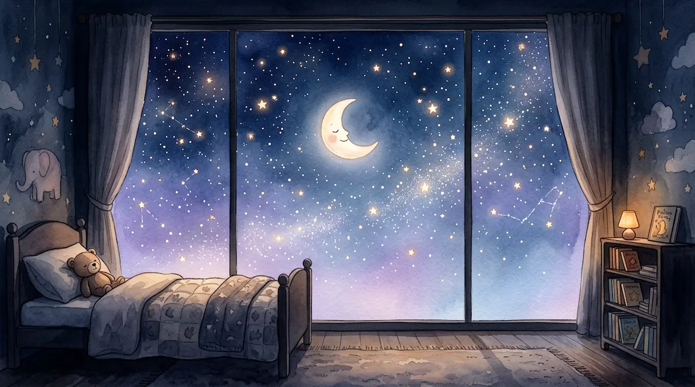
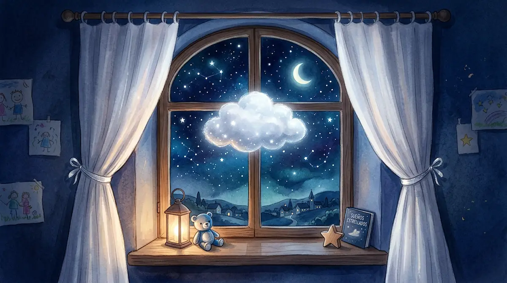
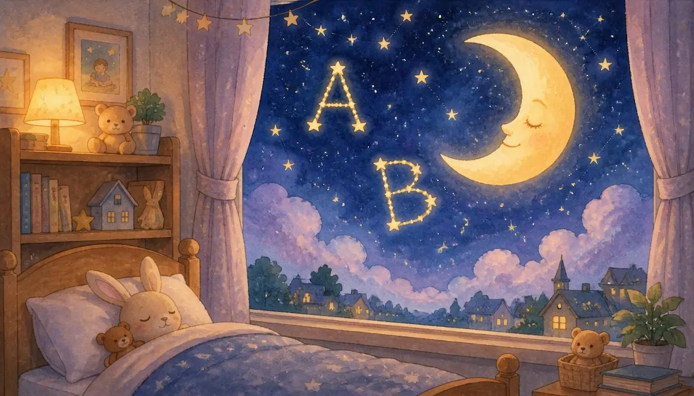
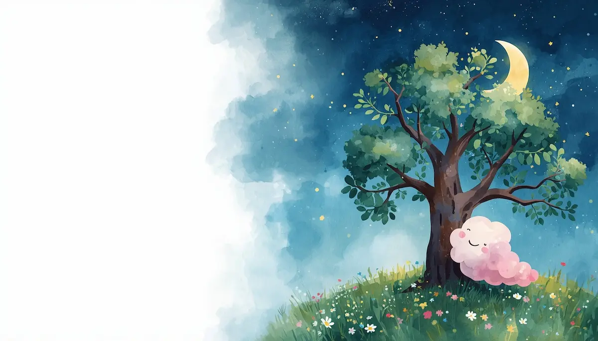
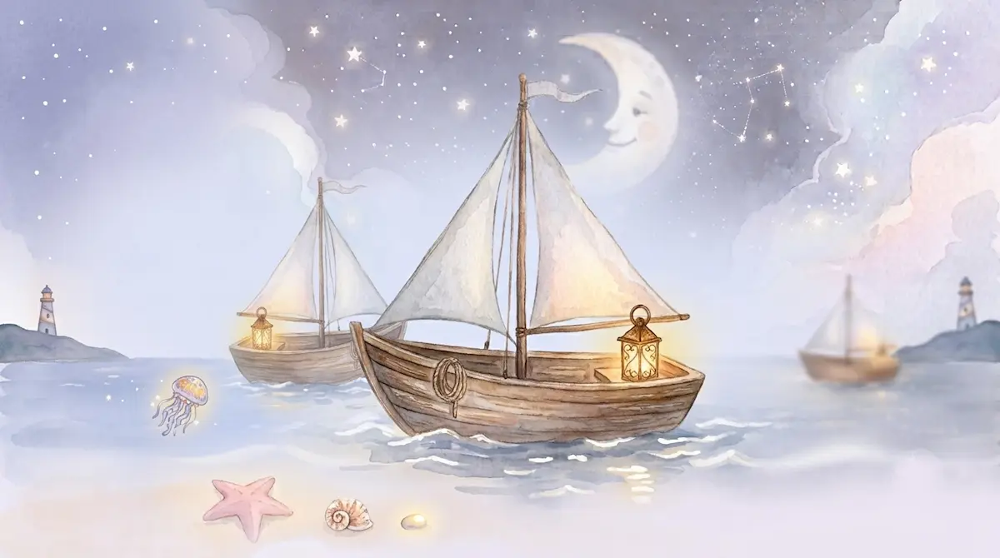
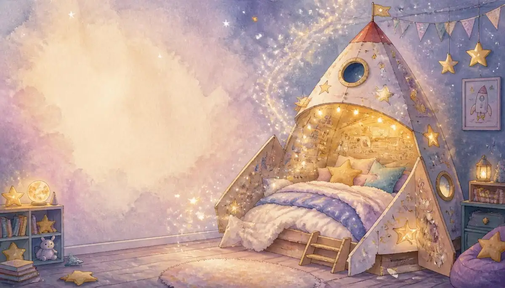
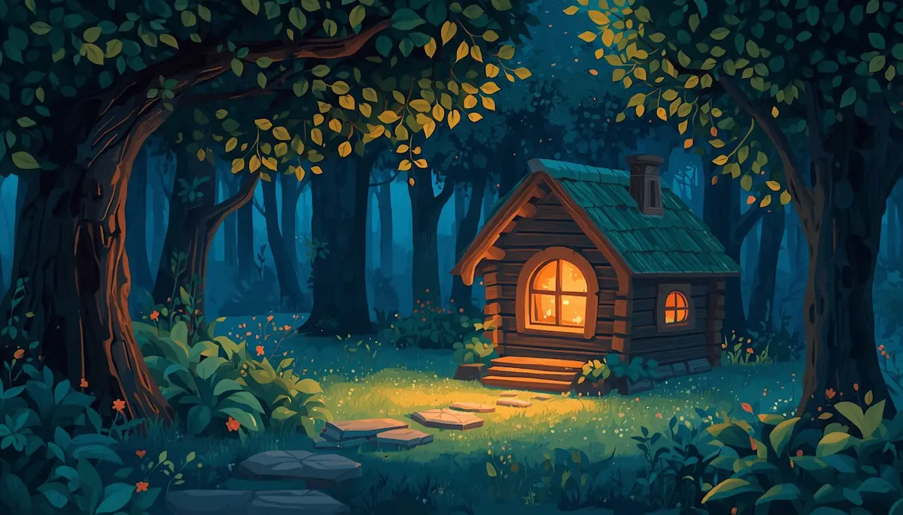
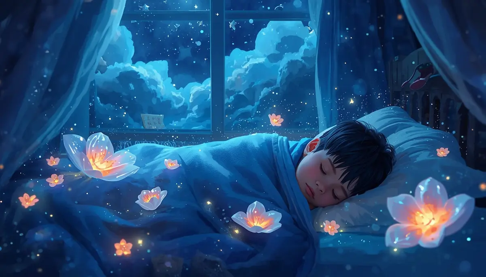
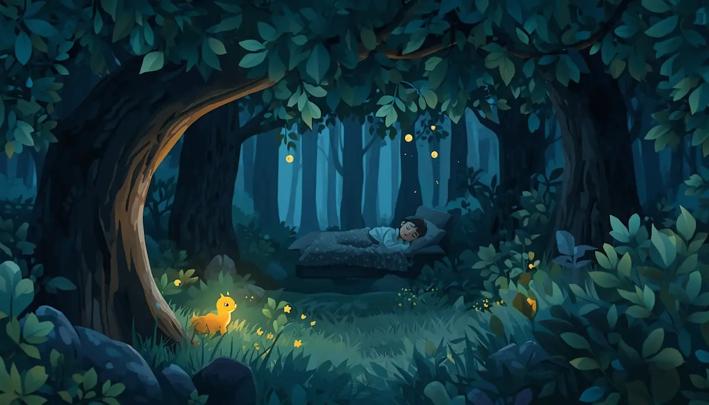

Acompañamiento
El viaje al Nido de Estrellas
La historia principal que da la bienvenida al canal, guiando a los niños hacia un refugio seguro de paz profunda.
▶ Escuchar cuentoElige la historia perfecta para esta noche. Cada relato combina fantasía dulce con herramientas de relajación guiada.

La historia principal que da la bienvenida al canal, guiando a los niños hacia un refugio seguro de paz profunda.
▶ Escuchar cuento
Una dulce metáfora visual para ayudar a los más pequeños a validar sus temores nocturnos, transformando el miedo en autoconfianza.
▶ Escuchar cuento
Relato enfocado en la relajación progresiva y la respiración pausada, ideal para liberar tensiones del día.
▶ Escuchar cuento
Un recorrido poético por las letras del firmamento, diseñado para enfocar la mente y facilitar la transición al sueño.
▶ Escuchar cuento
Una fábula sobre la aceptación y el crecimiento personal, cerrando el día con pensamientos positivos.
▶ Escuchar cuento
Travesía rítmica inspirada en el vaivén del mar, ideal para acompasar el ritmo cardíaco y la respiración.
▶ Escuchar cuento
Un viaje imaginario por constelaciones tranquilas que fomenta la seguridad interna antes de apagar la luz.
▶ Escuchar cuento
Una ardilla curiosa, un búho sabio y un pequeño zorro descubren juntos que las historias y la bondad son más brillantes cuando se comparten.
▶ Escuchar cuento
Un viaje hacia el escondite secreto de los sueños y el guardián de los globos de cristal, diseñado para calmar la mente de los niños y guiarles hacia un sueño profundo y seguro.
▶ Escuchar cuento
Una tierna historia de relajación y mindfulness donde una pequeña luciérnaga descubre que su verdadero valor y brillo provienen de su interior, ayudando a los niños a conectar con su calma y autoestima antes de dormir.
▶ Escuchar cuento